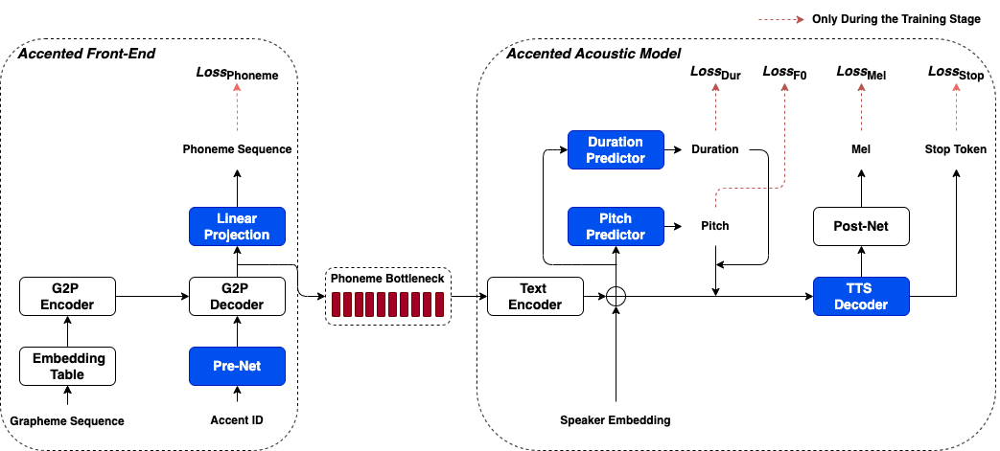

Authors
Xuehao Zhou, Mingyang Zhang, Yi Zhou, Zhizheng Wu, Haizhou Li
National University of Singapore, The Chinese University of Hong Kong, Shenzhen
Abstract
This paper presents an accented text-to-speech (TTS) synthesis framework with limited training data. We study two aspects concerning accent rendering: phonetic (phoneme difference) and prosodic (pitch pattern and phoneme duration) variations. The proposed accented TTS framework consists of two models: an accented front-end for grapheme-to-phoneme (G2P) conversion and an accented acoustic model with integrated pitch and duration predictors for phoneme-to-Mel-spectrogram prediction. The accented front-end directly models the phonetic variation, while the accented acoustic model explicitly controls the prosodic variation. Specifically, both models are first pre-trained on a large amount of data, then only the accent-related layers are fine-tuned on a limited amount of data for the target accent. In the experiments, speech data of three English accents, i.e., General American English, Irish English, and British English Received Pronunciation, are used for pre-training. The pre-trained models are then fine-tuned with Scottish and General Australian English accents, respectively. Both objective and subjective evaluation results show that the accented TTS front-end fine-tuned with a small accented phonetic lexicon (5k words) effectively handles the phonetic variation of accents, while the accented TTS acoustic model fine-tuned with a limited amount of accented speech data (approximately 3 minutes) effectively improves the prosodic rendering including pitch and duration. The overall accent modeling contributes to improved speech quality and accent similarity.
Framework Overview

Audio Samples
We study two scenarios on the accented TTS framework, a) only a small accented phonetic lexicon is available for the target accent. b) both a small accented phonetic lexicon and limited accented speech samples are available for the target accent.
The following TTS systems are implemented for comparison.
(1) Char-AM: This is a multi-speaker TTS acoustic model that takes a character sequence as input.
(2) US_G2P-AM: This is an accented TTS framework that
consists of an American G2P model and a multi-speaker
TTS acoustic model. The American G2P model is part
of the pre-trained multi-accent G2P model conditioned
on the General American accent ID.
(3) SCOT_G2P-AM: This is an accented TTS framework
that consists of a Scottish G2P model and a multi-speaker
TTS acoustic model. The Scottish G2P model is the pretrained
multi-accent G2P model fine-tuned with a Scottish
phonetic lexicon of 5k words.
(4) AU_G2P-AM: This is similar to SCOT G2P-AM except
that the G2P model is fine-tuned with a General Australian
phonetic lexicon of 5k words.
(5) SCOT_G2P-F0_Dur_AM: This is an accented TTS
framework that consists of a Scottish G2P model and a
multi-speaker TTS acoustic model with integrated pitch
and duration predictors. The Scottish G2P model is the
pre-trained multi-accent G2P model fine-tuned with a
Scottish phonetic lexicon of 5k words.
(6) AU_G2P-F0_Dur_AM: This is similar to SCOT G2PF0
Dur AM except that the G2P model is fine-tuned with
a General Australian phonetic lexicon of 5k words.
Note: The TTS system followed with ’-L’ denotes using only a small accented phonetic lexicon, with ’-S’ denotes using only limited accented speech data, and with
’-LS’ denotes using both of them.
Code-switching speech are generated from CN, EN, MIX adapted systems respectively. (Text: 十二月三日晚的香港 music zone 是收官之站)
| CH-Apt | EN-Apt | MIX-Apt | I-vec | |
|---|---|---|---|---|
| T2 | ||||
| RES-ENC | ||||
| CLWE | ||||
| GT | ||||
Mandarin speech are generated from CN adapted systems. (Text: 春夏秋冬是自然的轮回呀)
English speech are generated from EN adapted systems. (Text: i don't think it's soft justice)
| CH-Apt (Mandarin text) | EN-Apt (English text) | ||
|---|---|---|---|
| T2 | |||
| RES-ENC | |||
| CLWE | |||
| GT | |||